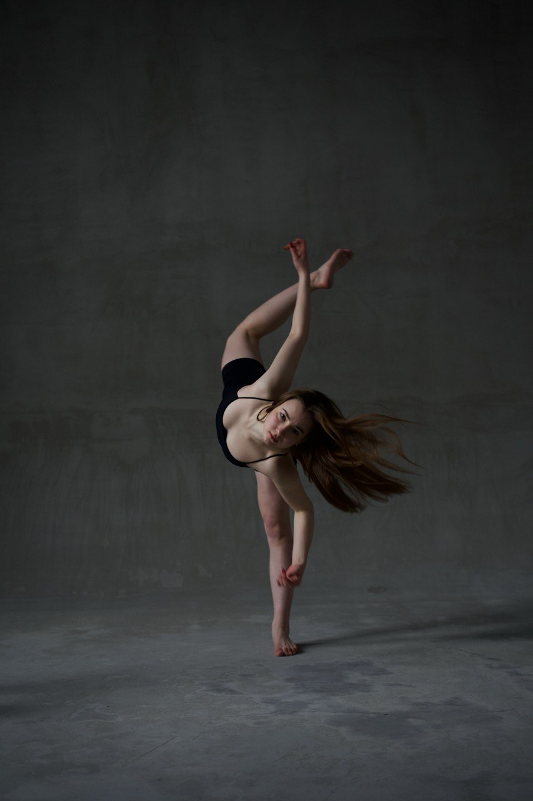
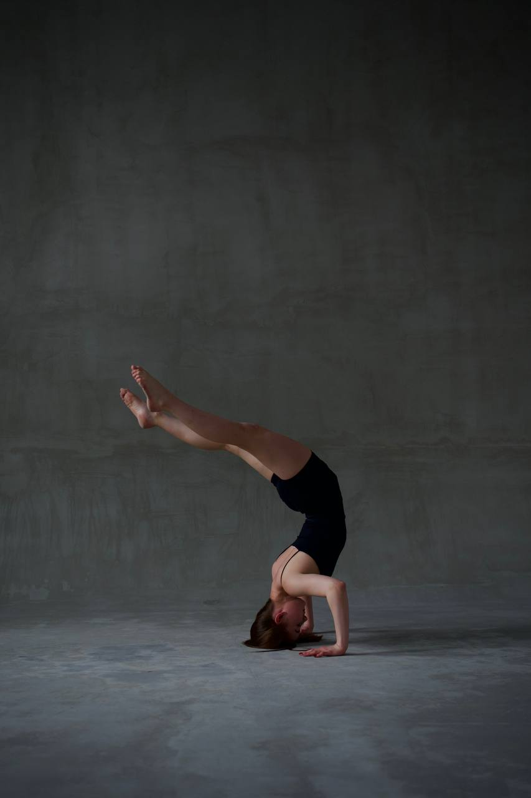

Performance Experience
Theatrical WorkRomeo and Juliet • Guest Artist
The Little Prince • Choreography Ihor Helunenko • New Classic Ballet
8 Femmes • Choreography by Vladislav Dobshinskiy • Cabaret
Pride and Prejudice • Choreography by Ihor Helunenko • Fantazianew Acting School
Contemporary WorkRunning • Choreography by Oleksandra Holushko
My Mind • Choreography by Oleksandra Holushko
No Light, No Light • Choreography by Oleksandra Holushko
The Worrier • Choreography by Oleksandra Holushko
Emotion
Flexibility
